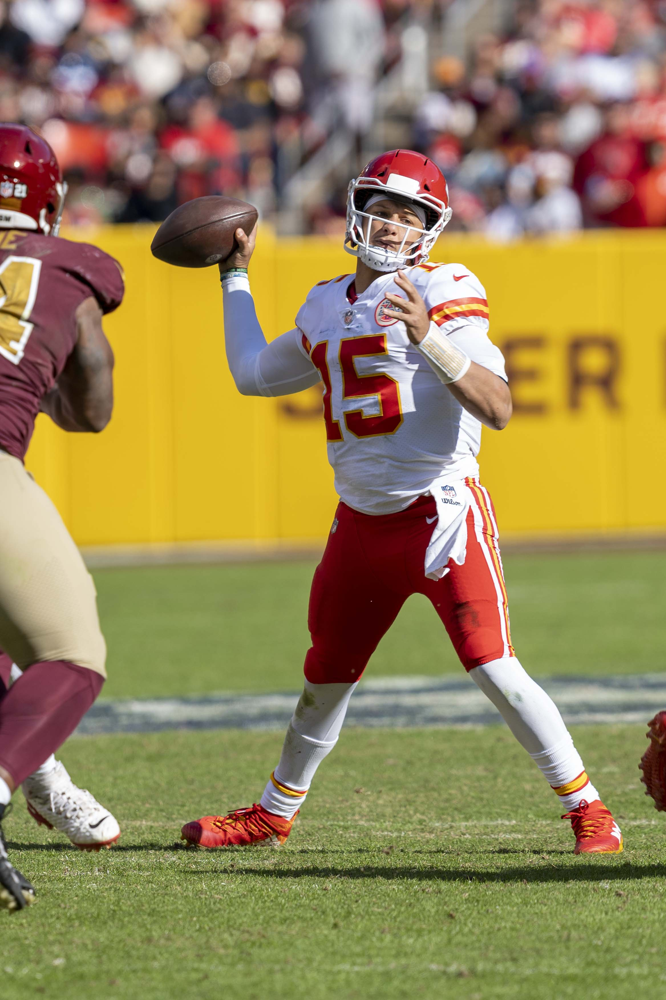

O quarterback é o principal responsável por comandar o ataque de uma equipe de futebol americano. Na NFL, a posição reúne liderança, inteligência tática, precisão nos passes e capacidade de tomar decisões sob pressão. Embora seja frequentemente lembrado pelos lançamentos espetaculares e touchdowns decisivos, seu trabalho vai muito além de simplesmente arremessar a bola.
Em uma modalidade marcada pela complexidade estratégica, o quarterback funciona como o centro das operações ofensivas. Ele precisa compreender o sistema de sua equipe, identificar o posicionamento dos defensores, ajustar jogadas e encontrar a melhor maneira de avançar pelo campo.
A importância da posição também aparece na maneira como as franquias constroem seus elencos. Encontrar um quarterback capaz de atuar em alto nível é uma das tarefas mais relevantes para uma organização que pretende competir regularmente por títulos.
O que é um quarterback
Frequentemente abreviado como QB, é o jogador que normalmente recebe a bola do center no início das jogadas ofensivas e participa diretamente da execução das estratégias estabelecidas pela comissão técnica.
Sua principal responsabilidade é conduzir o ataque, procurando avançar pelo campo até alcançar a end zone adversária e marcar pontos.
Para isso, ele dispõe de três alternativas fundamentais: lançar a bola para um recebedor, entregá-la a um corredor ou avançar com a própria posse.
Entretanto, a escolha entre essas possibilidades depende de fatores como a formação defensiva, a distância necessária para conquistar uma nova primeira descida e a situação da partida.
O quarterback também transmite instruções aos companheiros, organiza o alinhamento ofensivo e pode modificar a jogada originalmente chamada quando identifica uma oportunidade ou ameaça na defesa adversária.
Por isso, o sucesso na posição depende tanto da execução física quanto da compreensão do jogo.
Como funciona o trabalho durante uma jogada
Para entender a atuação de um quarterback, é importante acompanhar o que acontece antes e depois do snap, momento em que a bola é colocada em jogo.
Antes do snap, o QB observa o posicionamento dos defensores e procura identificar possíveis coberturas, pressões e espaços disponíveis.
Ele também comunica os sinais necessários para coordenar o ataque e garantir que todos os jogadores compreendam suas responsabilidades.
Após receber a bola, precisa executar rapidamente o planejamento ofensivo. Em jogadas de passe, procura um companheiro livre. Em jogadas terrestres, pode entregar a bola ao running back ou utilizá-la em uma corrida própria, dependendo do sistema adotado.
Uma das maiores dificuldades está na velocidade dessas decisões.
Enquanto o quarterback observa o campo, os defensores tentam pressioná-lo, fechar as linhas de passe e provocar erros que possam resultar na perda da posse.
A capacidade de interpretar corretamente essas movimentações é uma das características que distinguem os quarterbacks mais eficientes.
Leitura defensiva: uma das principais habilidades
Um jogador dessa posição de alto nível precisa reconhecer o comportamento da defesa adversária.
Antes do início da jogada, ele analisa onde estão posicionados os linebackers, cornerbacks e safeties, além de observar a movimentação dos jogadores próximos à linha de scrimmage.
Essas informações ajudam a identificar possíveis blitzes, situações em que defensores adicionais avançam para pressionar o quarterback, e os diferentes tipos de cobertura.
Na marcação individual, conhecida como man coverage, os defensores acompanham adversários específicos. Na cobertura por zona, chamada zone coverage, cada jogador protege uma determinada região do campo.
A defesa também pode tentar confundir o ataque, apresentando uma formação antes do snap e modificando suas responsabilidades imediatamente depois. Isso exige que o quarterback continue interpretando a jogada mesmo após receber a bola
Além da leitura defensiva, existe o trabalho de progressão. Em muitas jogadas de passe, o QB possui diferentes opções de recebedores e precisa identificar qual delas oferece a melhor oportunidade.
A prioridade pode mudar conforme a cobertura, a pressão e o desenvolvimento das rotas.
Essa combinação de preparação, percepção e velocidade mental torna a posição uma das mais exigentes do futebol americano.
As principais formações utilizadas
O posicionamento inicial do quarterback influencia diretamente a execução ofensiva. Entre as formações mais conhecidas estão under center, shotgun e pistol.
Under center:
Nessa formação, o quarterback fica imediatamente atrás do center e recebe o snap diretamente de suas mãos.
Essa disposição é frequentemente utilizada em jogadas terrestres tradicionais e também oferece possibilidades para passes após uma simulação de corrida.
Shotgun:
Nesse modelo, o quarterback começa a jogada alguns metros atrás do center, recebendo a bola por meio de um snap mais longo.
Esse posicionamento permite que ele observe o desenvolvimento da jogada a partir de uma posição mais recuada, embora continue dependendo da proteção da linha ofensiva.
É uma formação bastante associada aos ataques aéreos e também utilizada em sistemas que exploram a mobilidade do QB.
Pistol:
Na pistol, o quarterback se posiciona atrás do center, mas geralmente a uma distância menor do que na shotgun, com um running back alinhado atrás dele.
A formação permite combinar conceitos de corrida e passe, oferecendo diferentes possibilidades de execução. A escolha entre essas estruturas depende do sistema ofensivo, das características dos jogadores e das situações enfrentadas durante a partida.
Os diferentes estilos de quarterback
Embora todos desempenhem funções semelhantes, os quarterbacks podem apresentar estilos bastante distintos.
O pocket passer é um jogador cuja atuação se concentra principalmente no pocket, espaço de proteção criado pela linha ofensiva.
Seu jogo depende especialmente do posicionamento dos pés, da leitura defensiva, da precisão dos lançamentos e da capacidade de trabalhar dentro da estrutura do ataque.
Já o dual-threat quarterback representa uma ameaça tanto pelo passe quanto pela corrida.
Esse perfil amplia as possibilidades ofensivas porque obriga a defesa a considerar que o QB pode avançar com a própria bola, além de distribuí-la aos recebedores.
Lamar Jackson é um exemplo marcante da valorização da mobilidade dos quarterbacks na NFL. Sua capacidade de correr e lançar demonstra como um ataque pode explorar diferentes dimensões da posição.
Também existem quarterbacks conhecidos por sua habilidade de improvisação, capazes de escapar da pressão, prolongar jogadas e encontrar recebedores mesmo quando a execução inicial não funciona.
Essas classificações, entretanto, não são categorias rígidas. Um mesmo jogador pode apresentar diferentes características e adaptar seu estilo ao longo da carreira.
O que são play-action, RPO e read-option
A evolução dos sistemas ofensivos ampliou as responsabilidades do quarterback e popularizou conceitos que aparecem frequentemente nas transmissões da NFL.
O play-action é uma jogada de passe que começa com uma simulação de corrida. O quarterback finge entregar a bola ao running back para tentar provocar uma reação dos defensores e abrir espaços para o lançamento.
Na RPO, sigla para run-pass option, o ataque combina possibilidades de corrida e passe em uma mesma estrutura. O quarterback utiliza leituras definidas pelo desenho da jogada para escolher a alternativa disponível.
Já a read-option normalmente envolve a decisão entre entregar a bola ao running back ou mantê-la para uma corrida do próprio quarterback, conforme o comportamento de um defensor específico.
Esses conceitos demonstram como o QB pode influenciar a defesa mesmo antes de lançar a bola.
Ao criar dúvidas sobre o destino da jogada, o ataque procura obter vantagens de posicionamento e explorar espaços que poderiam permanecer fechados em uma estratégia mais previsível.
A importância na proteção da linha ofensiva
O talento individual do quarterback não elimina a necessidade de uma boa linha ofensiva.
O center, os guards e os offensive tackles desempenham funções fundamentais na proteção contra os defensores que tentam alcançar o QB.
Em jogadas de passe, esses jogadores procuram formar o pocket, permitindo que o quarterback tenha espaço e tempo para executar os lançamentos.
Quando a proteção falha, o QB pode ser pressionado rapidamente e obrigado a antecipar sua decisão, abandonar a posição ou aceitar um sack.
O sack acontece quando o quarterback, atuando como passador, é derrubado atrás da linha de scrimmage antes de conseguir realizar o lançamento.
Além da perda de jardas, a jogada pode comprometer a campanha ofensiva e dificultar a conquista de uma nova primeira descida.
Por isso, avaliar o desempenho do jogador exige considerar também o funcionamento coletivo do ataque, incluindo a linha ofensiva, os recebedores e o desenho das jogadas.
As estatísticas que são utilizadas para avaliar um quarterback
Os números ajudam a compreender a produção dos quarterbacks, embora não sejam suficientes para explicar todas as características de sua atuação.
Entre os principais indicadores estão:
Jardas de passe: representam a distância total conquistada pelo ataque em jogadas de passe creditadas ao quarterback, incluindo as jardas obtidas pelo recebedor após a recepção.
Passes completos: indicam quantos lançamentos foram recebidos legalmente por companheiros de equipe.
Percentual de passes completos: mostra a proporção de passes completados em relação ao número de tentativas.
Touchdowns de passe: são registrados quando um lançamento resulta em touchdown, que vale seis pontos para a equipe.
Interceptações: acontecem quando um defensor captura um passe lançado pelo ataque, provocando a mudança de posse.
Jardas por tentativa: indicam a média de jardas produzidas a cada lançamento tentado.
Passer rating: é um índice estatístico tradicional da NFL calculado a partir do percentual de passes completos, jardas por tentativa, touchdowns e interceptações. Seu valor máximo é 158,3.
Também é importante observar as estatísticas terrestres, especialmente quando o quarterback participa frequentemente das jogadas de corrida.
Indicadores avançados, como EPA (Expected Points Added), permitem examinar quanto determinadas jogadas contribuem para aumentar ou diminuir a expectativa de pontuação da equipe.
Nenhuma dessas métricas, isoladamente, determina a qualidade de um QB. O contexto ofensivo, a dificuldade das situações enfrentadas e a capacidade de executar jogadas decisivas também precisam entrar na avaliação.
Os quarterbacks mais marcantes da história da NFL
A liga reúne diferentes gerações de jogadores que ajudaram a transformar a posição e estabelecer padrões de excelência.
Johnny Unitas foi um dos grandes nomes da evolução do jogo aéreo no futebol americano profissional. Sua trajetória contribuiu para consolidar a importância do quarterback em ataques construídos ao redor dos passes.
Joe Montana ficou marcado pela precisão, pelo desempenho em momentos decisivos e pelos títulos conquistados com o San Francisco 49ers.
Dan Marino se destacou pelo talento como passador e pela capacidade de produzir números expressivos em uma época de características ofensivas diferentes das observadas posteriormente.
Peyton Manning construiu sua reputação pela leitura defensiva, pela preparação tática e pelo controle exercido sobre o ataque.
Tom Brady tornou-se uma referência histórica de longevidade competitiva, liderança e desempenho em decisões, especialmente por suas conquistas com o New England Patriots e o Tampa Bay Buccaneers. Sua trajetória é um dos maiores exemplos da importância da inteligência tática e da preparação para um quarterback. A \<a href="[https://cortedosesportes.com.br/tom-brady-historia-draft-titulos-legado-nfl.html](https://cortedosesportes.com.br/tom-brady-historia-draft-titulos-legado-nfl.html)">a carreira, desde sua escolha no Draft até os sete títulos de Super Bowl\</a>, demonstra como consistência, leitura defensiva e capacidade de decisão podem transformar um jogador em uma lenda do futebol americano.
Entre os nomes de destaque de uma geração posterior, \<a href="https\://cortedosesportes.com.br/patrick-mahomes-carreira-titulos-mvps-chiefs-nfl.html">Patrick Mahomes\</a> ganhou projeção pela combinação de criatividade, potência no braço, improvisação e resultados expressivos com o Kansas City Chiefs.
A comparação entre essas gerações demonstra que não existe apenas uma maneira de alcançar a excelência na posição. Alguns quarterbacks se destacaram pela capacidade de organizar o ataque dentro de sua estrutura tradicional, enquanto outros ampliaram as possibilidades de criação e movimentação.
O quarterback precisa ser um líder?
A liderança é uma característica frequentemente associada aos grandes QB, mas ela não se resume a discursos motivacionais ou demonstrações de personalidade.
Dentro de campo, liderar envolve comunicar corretamente as chamadas, reconhecer erros, transmitir confiança e manter a organização ofensiva em situações de pressão.
O quarterback também participa intensamente da preparação para os adversários, estudando esquemas defensivos, tendências e situações específicas.
Durante uma partida, é preciso administrar fatores como o relógio, os tempos técnicos disponíveis, a posição de campo e o número de descidas restantes.
Em campanhas decisivas, cada escolha ganha importância.
Um passe arriscado pode resultar em touchdown, mas também pode provocar uma interceptação. Uma corrida pode conquistar uma primeira descida, enquanto um lançamento incompleto pode interromper o relógio e modificar a estratégia dos instantes finais.
O bom quarterback não é apenas aquele que consegue executar jogadas difíceis. É também aquele que reconhece quando uma decisão conservadora oferece mais benefícios para sua equipe.
Por que é considerado a posição mais importante da NFL
A importância do QB está relacionada à quantidade de decisões ofensivas que passam por suas mãos.
Ele participa da organização das jogadas, influencia a distribuição da bola e frequentemente determina como o ataque reage aos ajustes defensivos.
A posição também exige domínio de diferentes aspectos do futebol americano: execução técnica, leitura tática, comunicação, controle emocional e compreensão das situações de jogo.
Entretanto, reconhecer seu peso não significa ignorar o caráter coletivo da modalidade.
Mesmo um quarterback excepcional depende de proteção, recebedores eficientes, corredores produtivos e uma comissão técnica capaz de explorar suas características.
A defesa e os times especiais também podem determinar o resultado de uma partida, independentemente do desempenho ofensivo.
O valor do QB está justamente em sua capacidade de conectar esses elementos e potencializar o funcionamento do ataque.
O papel na evolução da NFL
A posição de quarterback acompanha diretamente as transformações do futebol americano profissional.
A valorização dos passes, o desenvolvimento de sistemas ofensivos mais variados e a incorporação de conceitos de mobilidade ampliaram as possibilidades de atuação dos jogadores.
Ao mesmo tempo, as defesas desenvolveram respostas cada vez mais sofisticadas, exigindo preparação e capacidade constante de adaptação.
O quarterback deixou de ser observado somente como um lançador para se consolidar como um dos principais responsáveis pela interpretação e execução estratégica do jogo.
O talento no braço continua importante, mas precisa estar acompanhado por precisão, inteligência, controle emocional e capacidade de reação.
É essa combinação que explica o fascínio pela posição. Em poucos segundos, um quarterback pode transformar uma campanha aparentemente comprometida em uma oportunidade de pontuação. Da mesma forma, uma decisão equivocada pode alterar completamente o rumo da partida.
Na NFL, os grandes quarterbacks são lembrados não apenas pelos passes que completaram, mas pela maneira como conduziram suas equipes nos momentos de maior exigência.
Por isso, compreender a posição é um dos caminhos mais importantes para entender o próprio futebol americano: um esporte em que força e velocidade fazem diferença, mas no qual a leitura correta de uma jogada pode ser tão decisiva quanto qualquer demonstração de talento físico.